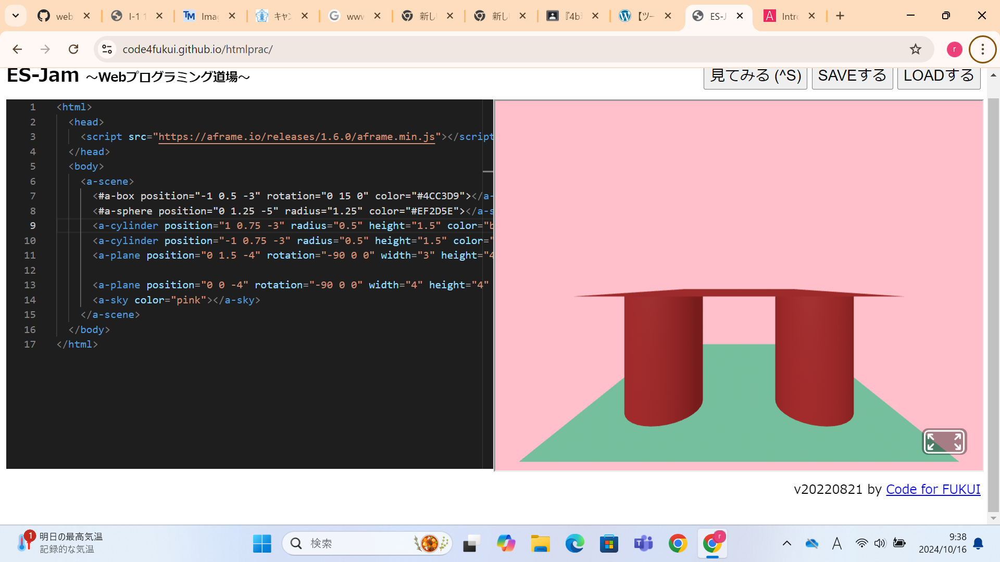
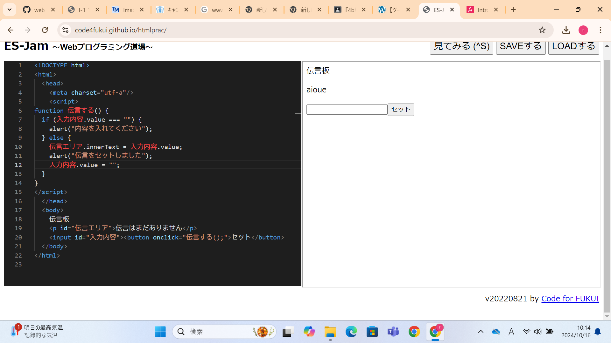

第3週目
3-1 JavaScript体験：VR空間を作る
自作した３次元空間
1.内容
プログラム言語であるJavaScriptでVR空間を作成するプログラミングを体験した。３週目のコーディング体験ではWebプログラミング道場というサイト
を利用して、Webプログラミング道場で動作が確認できたコードをGithubにアップロードしてブラウザ上で動作を確認した。A-Frameという仕組みを使い
図形の色や位置がコードによって構造されていることを理解した。 2.感想
2週目で体験したWorkroomはこのように作れていると知り関心を持った。次にVR空間触るときはより高度なことを行ってみたいと感じた。
プログラム言語であるJavaScriptでVR空間を作成するプログラミングを体験した。３週目のコーディング体験ではWebプログラミング道場というサイト
を利用して、Webプログラミング道場で動作が確認できたコードをGithubにアップロードしてブラウザ上で動作を確認した。A-Frameという仕組みを使い
図形の色や位置がコードによって構造されていることを理解した。 2.感想
2週目で体験したWorkroomはこのように作れていると知り関心を持った。次にVR空間触るときはより高度なことを行ってみたいと感じた。
3-2 JavaScript体験：伝言プログラムを作る
伝言板
1.内容
VR空間とは違い、コピーしてペーストするだけではなく1からコーディングを行った。1つ1つ進めるごとに動作を確認した。その後にVR空間を作ると同じ
ようにWebプログラミング道場というサイトで動作を確認した後にGithubにアップロードしてブラウザ上で動作を確認した。
2.感想
セミコロンが無いだけで動作しなかったり文を書くごとにタグをつけなければいけなかったりするのはめんどくさいと感じたが、htmlに世界標準での書き
方があるのはプログラミングをしているという実感があって面白かった。
VR空間とは違い、コピーしてペーストするだけではなく1からコーディングを行った。1つ1つ進めるごとに動作を確認した。その後にVR空間を作ると同じ
ようにWebプログラミング道場というサイトで動作を確認した後にGithubにアップロードしてブラウザ上で動作を確認した。
2.感想
セミコロンが無いだけで動作しなかったり文を書くごとにタグをつけなければいけなかったりするのはめんどくさいと感じたが、htmlに世界標準での書き
方があるのはプログラミングをしているという実感があって面白かった。
3-3 JavaScriptプログラムの３次元空間の体験

1.内容
A-Frameを利用することで作成できるインタラクティブなプログラムの利用体験を行った。インタラクティブとは利用者の入力に応じて動作が異なるもの
のことを言い、今回の場合利用者がコントローラーで入力したことがVR空間に反映されることを言う。 2.感想
自分が空間上に図形を出すことしかできなかったが同じパッケージでもここまでできるんだと思い感動した。ただ、他のVR空間の時よりも酔った感覚
が強かったため自分がこのようなプログラムを作っていくときは酔った感覚を少なくできるようにしていきたい。
A-Frameを利用することで作成できるインタラクティブなプログラムの利用体験を行った。インタラクティブとは利用者の入力に応じて動作が異なるもの
のことを言い、今回の場合利用者がコントローラーで入力したことがVR空間に反映されることを言う。 2.感想
自分が空間上に図形を出すことしかできなかったが同じパッケージでもここまでできるんだと思い感動した。ただ、他のVR空間の時よりも酔った感覚
が強かったため自分がこのようなプログラムを作っていくときは酔った感覚を少なくできるようにしていきたい。